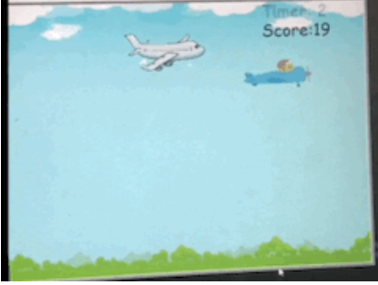
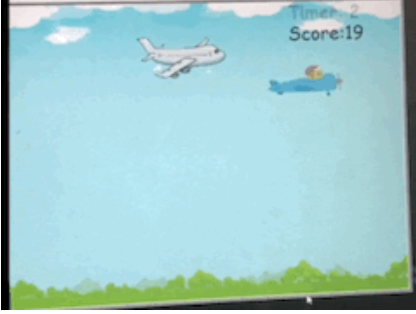

This is my Portfolio Page!
My first project! The Wacky Triangle.


We created a program that made objects move in a pattern infinitely. First we imported the turtle and math to begin. After that we created two empty lists for the sets of shape objects that we were going to use, those being “left_shapes” and “right_shapes”. Then we made lists for the shapes and colors of the objects that we used to initialize our objects. We then added the shapes into the picture, colorized them, and moved them into their starting positions, with the objects in “left_shapes” being facing the same direction and the objects in “right_shapes” facing another direction. The shapes then moved forward and we established a condition for what happens after the first collision. We then set up the first collision. After the shapes collided for the first time, they changed color and shape and moved in the opposite direction. We stored the original colors and shapes of the objects in variables so that we could revert them to their original conditions after the second collision. Because the objects followed a triangular path, they switched directions again and began to move toward each other after moving a predetermined distance after the first collision. When the objects collide for a second time, they go back to their original position repeat the same pattern in an infinite loop.

My second project: Fly high in the Sky (Sky High)
For the second project, we created a game where the objective is to fly towards a gas pump. First, we imported random, turtle, and randint to begin. After that, we created the variables that would hold the timer, plane image, and gas image. Afterward, we added the background which would resemble a bright and blue sky for the plane to fly around in. After initializing the gas pump, the timer, and the plane, we then created the game functions which would house the key components of our game; these functions were drawing the gas pump and the plane. “Refilling” the gasoline, or changing its location once it collided with the plane. The movements of both the plane and gas pump. The score counter which holds how many points the player has. Finally, the timer which would indicate how much time the player had before the turtle would hide. Once we created all the proper game functions, we then added a death screen to indicate when the player had run out of time or when the player had crashed into a bird. If the plane reaches the gas pump in time, then the game would restart, and the player gains a point.
Liberating Willy.
Black Jack game written in Python (delete lter).
Modified bits in pictures (delete later).
Use data files to create graphs (delete later, lol).
Using netlogo do remix of illusions (delete later again).
Interactive Fiction Rags to Riches (Ryan Lockie is #1 and delete lter).
